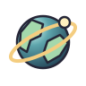
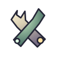
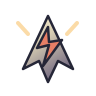
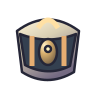
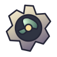
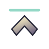

← Space Stage comparison board Provisional icons — visual direction rejected. The user rejected the rounded controls, shiny borders and current icon aesthetic. The decorative wells are removed. These symbols remain temporary for interaction testing. Navigation, ecology, equipment and cargo have different silhouettes as well as colors. Planet art and typography also remain rejected. Tooltips are available on hover.
Display size 72 px Click an icon to compare selected state. 
planet map nav
communicator comms

category tools tools
category life life

category weapons weapons

inventory cargo

subsystems tools
ascend nav
descend nav
brake weapons
zoom in nav
zoom out nav

palette close tools
palette open tools
page previous tools
page next tools
The game palette supports 18 slots per page and additional pages. Hover reveals names and restrictions; count and shortcut remain distinct. Actual inventory, purchases and cooldowns come from the simulation.
The local chart is surface-only. Solar-system and galaxy views use separate navigation; the flight-to-sector connection is still unfinished.
Native Godot render · 1080p. Dense item layout uses explicit test fixtures, not a claim of new playable content. This capture is generated locally and is not stored in Git. Reviewed dimensions: 1080p and 1440p rendered; 4K layout geometry checked. Native-input and accessibility review remain open.